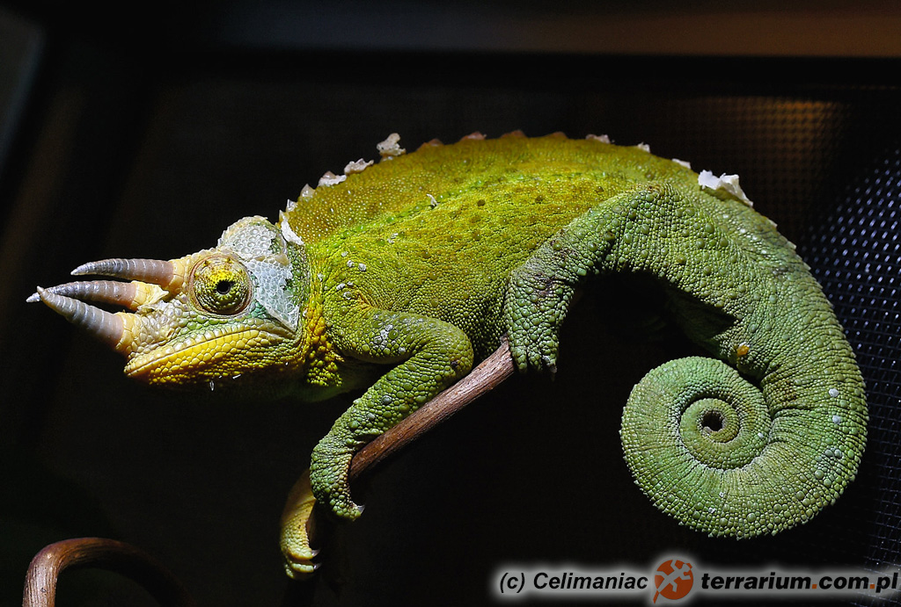
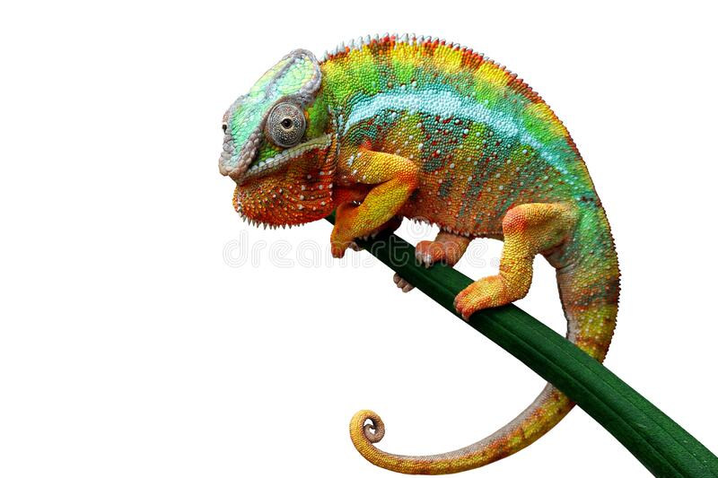
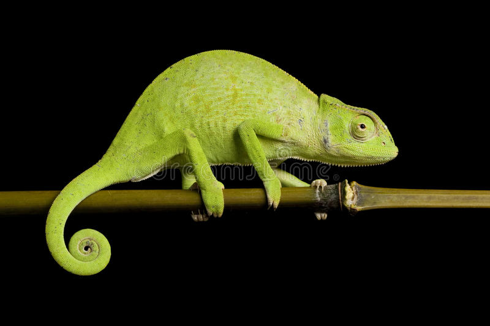
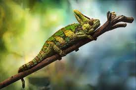

Ma ciało mocno bocznie spłaszczone, zwłaszcza część grzbietowa, na której skóra tworzy wysoką, płaską listwę o ostrej krawędzi. Nogi cienkie, tej samej długości, wszystkie palce przeciwstawne, zrośnięte po 2 lub 3 w rodzaj szczypiec, ogon długi i chwytny. Głowa kanciasta, sklepiona, często pokryta rogowymi naroślami. Oczy poruszają się niezależnie od siebie, tak że każde może patrzeć w inną stronę. Powieki zrośnięte na tyle, że zostaje tylko niewielki otwór na źrenice.Długość od 2,5 do ponad 60 cm
Masa ciała do jednego kilograma.
Występowanie
Większość gatunków występuje w Afryce i na Madagaskarze. Nieliczne spotykane są w innych regionach: południowa Europa , Bliski Wschód , Indie , Hawaje
Rozmnażanie
Większość jest jajorodna, a tylko nieliczne są jajożyworodne.
Ochrona
Większość gatunków z tej rodziny została objęte konwencją waszyngtońską CITES. Kilka gatunków znajduje się w Czerwonej księdze gatunków zagrożonych Międzynarodowej Unii Ochrony Przyrody i Jej Zasobów, w tym południowoafrykański Bradypodion taeniabronchum jako krytycznie zagrożony wyginięciem.
Rodzaje kameleonów
Pokarm
Głównym ich pokarmem są owady i pająki, a większe gatunki zjadają małe ptaki i myszy.
Kameleony Jacksona
Kameleony Senegalu
Ukryte kameleony
Pantele Chameleons
Kameleon Jackson-opis gatunku
Gatunek jaszczurki z rodziny kameleonów, naturalnie występujący we wschodniej Afryce, introdukowany na Hawaje. Zwierzę to jest ubarwione na zielono bądź żółtobrązowo.
W populacji jest więcej samców niż samic. Zazwyczaj samce stanowią 60–70% danej populacji. Kameleon Jacksona zamieszkuje lasy Kenii i Tanzanii. Ranek kameleon rozpoczyna od kąpieli słonecznej. Aby móc wspinać się po drzewach i polować, musi podnieść temperaturę ciała, wychłodzonego w czasie nocy.Gdy się rozgrzeje, wyrusza na polowanie. Jest zwierzęciem terytorialnym, szczególnie samce zaciekle bronią swoich rewirów. W czasie walki biją przeciwnika rogami. Gryzą, warczą i parskają na siebie, starając się zepchnąć z gałęzi rywala. Czasami kameleon schodzi na ziemię. Porusza się, przyjmując charakterystyczną postawę – unosi na czterech łapach tułów i prostuje ogon. Jedyną jego bronią przed wrogami, podobnie jak u pozostałych kameleonów, jest umiejętność doskonałego wtapiania się w otoczenie, żeby nic mu nie groziło.



